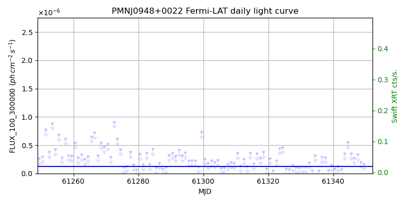
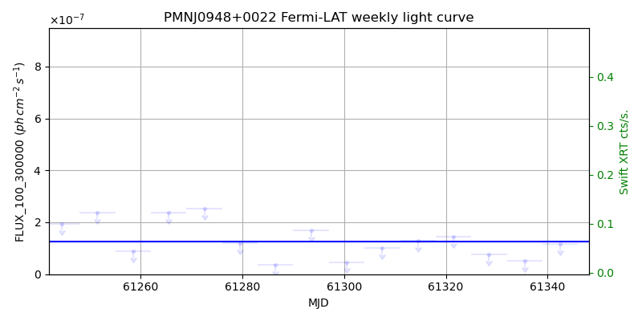
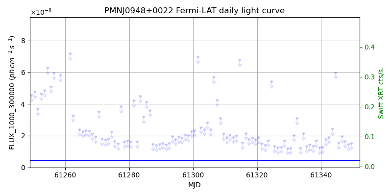
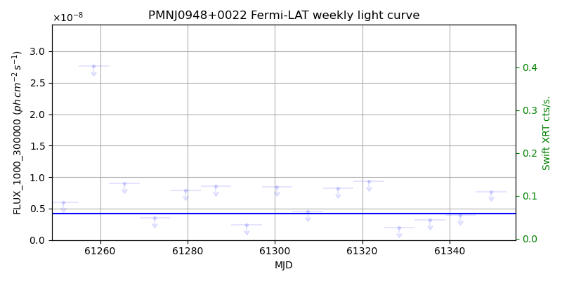

LAT Lightcurve site: https://fermi.gsfc.nasa.gov/ssc/data/access/lat/msl_lc/source/PMN_J0948p0022
Swift site: https://www.swift.psu.edu/monitoring/source.php?source=PMNJ0948+0022
NED: Query
Time of last update of this page: UT: 2026-11-13 16:21 (MJD: 61357.682)
| Property | Value |
|---|---|
| R.A. | 9:48:57.36 |
| Dec. | 0:22:26.4 |
| z | 0.584 |
| 3FGL SpectrumType | LogParabola |
| 3FGL PL Index | |
| 3FGL Flux_100_300000 | 1.27e-07 1 / (s cm2) |
| 3FGL Flux_1000_300000 | 4.19e-09 1 / (s cm2) |
| 3FGL Flux >200 GeV | 3.67e-14 1 / (s cm2) |
| 3FGL Extrap. Crab >200 GeV | 0.00 |
| 3FGL Flux After EBL Absorption >200GeV | 5.90e-15 1 / (s cm2) |
| 3FGL EBL Crab Fraction >200GeV | 0.00 |

| MJD | dMJD | Flux | dFlux | Frac3FGL | FracCrab>200GeV | EBLFracCrab>200GeV |
|---|---|---|---|---|---|---|
| 61348.50 | 0.50 | 2.07e-07 | 0.00e+00 | 0.00 | 0.00 | 0.00 |
| 61349.50 | 0.50 | 1.70e-07 | 0.00e+00 | 0.00 | 0.00 | 0.00 |
| 61350.50 | 0.50 | 1.73e-07 | 0.00e+00 | 0.00 | 0.00 | 0.00 |
| 61351.50 | 0.50 | 1.33e-07 | 0.00e+00 | 0.00 | 0.00 | 0.00 |
| 61352.50 | 0.50 | 7.91e-07 | 0.00e+00 | 0.00 | 0.00 | 0.00 |

| MJD | dMJD | Flux | dFlux | Frac3FGL | FracCrab>200GeV | EBLFracCrab>200GeV |
|---|---|---|---|---|---|---|
| 61321.50 | 3.50 | 1.45e-07 | 0.00e+00 | 0.00 | 0.00 | 0.00 |
| 61328.50 | 3.50 | 7.59e-08 | 0.00e+00 | 0.00 | 0.00 | 0.00 |
| 61335.50 | 3.50 | 5.06e-08 | 0.00e+00 | 0.00 | 0.00 | 0.00 |
| 61342.50 | 3.50 | 1.17e-07 | 0.00e+00 | 0.00 | 0.00 | 0.00 |
| 61349.50 | 3.50 | 1.09e-07 | 0.00e+00 | 0.00 | 0.00 | 0.00 |

| MJD | dMJD | Flux | dFlux | Frac3FGL | FracCrab>200GeV | EBLFracCrab>200GeV |
|---|---|---|---|---|---|---|
| 61348.50 | 0.50 | 1.46e-08 | 0.00e+00 | 0.00 | 0.00 | 0.00 |
| 61349.50 | 0.50 | 1.54e-08 | 0.00e+00 | 0.00 | 0.00 | 0.00 |
| 61350.50 | 0.50 | 6.16e-08 | 0.00e+00 | 0.00 | 0.00 | 0.00 |
| 61351.50 | 0.50 | 3.76e-08 | 0.00e+00 | 0.00 | 0.00 | 0.00 |
| 61352.50 | 0.50 | 4.00e-08 | 0.00e+00 | 0.00 | 0.00 | 0.00 |

| MJD | dMJD | Flux | dFlux | Frac3FGL | FracCrab>200GeV | EBLFracCrab>200GeV |
|---|---|---|---|---|---|---|
| 61321.50 | 3.50 | 9.32e-09 | 0.00e+00 | 0.00 | 0.00 | 0.00 |
| 61328.50 | 3.50 | 1.94e-09 | 0.00e+00 | 0.00 | 0.00 | 0.00 |
| 61335.50 | 3.50 | 3.20e-09 | 0.00e+00 | 0.00 | 0.00 | 0.00 |
| 61342.50 | 3.50 | 3.99e-09 | 0.00e+00 | 0.00 | 0.00 | 0.00 |
| 61349.50 | 3.50 | 7.72e-09 | 0.00e+00 | 0.00 | 0.00 | 0.00 |
--------------------------------------------------------- Using user-supplied coords: 9:48:57.36 0:22:26.4 2000 --------------------------------------------------------- FLWO UT night of: 2026-11-14 Local Sid. @ Midnight: 03:09 Sunset (-15.0) (local, UT): 18:35 01:35 Sunrise (-15.0) (local, UT): 05:42 12:42 Moonrise (local, UT): Moonset (local, UT): 20:50 03:50 Moon phase: 0.22 --------------------------------------------------------- AzTime LSID UT Obj_el Obj_az Mn_el Mn_az Sep. --------------------------------------------------------- 18:35 21:44 01:35 -58.0 357.0 20.1 218.2 131.7 19:05 22:14 02:05 -57.6 11.1 16.0 223.7 131.8 19:35 22:44 02:35 -55.6 24.4 11.6 228.6 132.0 20:05 23:14 03:05 -52.4 35.9 6.9 233.2 132.2 20:35 23:44 03:35 -48.2 45.7 2.0 237.3 132.5 21:05 00:14 04:05 -43.3 53.9 -2.2 241.2 132.7 21:35 00:44 04:35 -37.9 60.8 -9.0 244.8 132.9 22:05 01:14 05:05 -32.2 66.8 -14.6 248.2 133.2 22:35 01:44 05:35 -26.2 72.0 -20.4 251.4 133.4 23:05 02:14 06:05 -20.0 76.7 -26.2 254.5 133.7 23:35 02:44 06:35 -13.7 81.0 -32.1 257.5 134.0 00:05 03:14 07:05 -7.4 85.1 -38.1 260.6 134.3 00:35 03:45 07:35 -0.4 89.1 -44.2 263.8 134.6 01:05 04:15 08:05 5.5 93.0 -50.2 267.1 134.9 01:35 04:45 08:35 11.8 97.1 -56.3 270.9 135.2 02:05 05:15 09:05 18.1 101.3 -62.4 275.3 135.5 02:35 05:45 09:35 24.3 105.8 -68.4 281.1 135.8 03:05 06:15 10:05 30.4 110.8 -74.2 289.9 136.2 03:35 06:45 10:35 36.3 116.5 -79.6 306.2 136.5 04:05 07:15 11:05 41.8 123.0 -83.2 343.5 136.8 04:35 07:45 11:35 46.9 130.7 -82.1 35.1 137.1 05:05 08:15 12:05 51.4 140.0 -77.4 61.2 137.4 05:35 08:45 12:35 55.1 151.0 -71.8 73.4 137.7 05:42 08:52 12:42 55.7 153.6 -70.5 75.2 137.8 --------------------------------------------------------- Dark hours >55 deg.: 0.12 srcstart (UT): 2026-11-14 12:34 srcend (UT): 2026-11-14 12:41